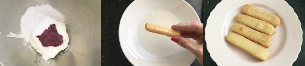
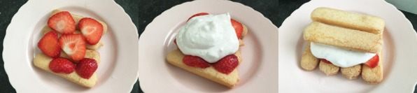

Mix of klop de mascarpone en de Griekse yoghurt door elkaar tot er geen klontjes meer in zitten.
Klop dan ook de jam en poedersuiker er door. Zet het mengsel zolang in de koelkast.
Doe de zoete witte wijn in een diep bordje en doop de lange vingers er kort in en leg dan 4 stuks naast elkaar op een bordje.
Doe dit ook op de andere bordjes.

Snijd ongeveer de helft van de aardbeien in dunne plakjes en leg deze op de lange vingers.
Schep dan wat van het mascarpone mengsel er op. Dek af met 2 in wijn gedrenkte lange vingers.
Schep hier wat van het mascarpone mengsel op (houd de lange vingers bij elkaar zodat ze er niet af glijden).

Snijd de rest van de aardbeien in kleine stukjes en verdeel over de tiramisu.
Rasp er op het laats nog wat witte chocolade over. Serveer direct of bewaar max 1 dag in de koelkast.
Tip:
voor een alcoholvrije variant vervang je de wijn door appelsap.